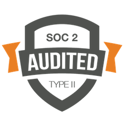

Kessler Topaz is dedicated to providing secure, uninterrupted service to our clients and has implemented numerous measures and protections to safeguard client transaction data. Highlights are as follows:
The Firm's Information Security controls are audited annually by a licensed CPA firm (SOC 1 Type II and SOC 2 Type II audit reports are available upon request).
The Firm has a robust in-house IT department consisting of 10 employees - led by Head of IT, Andrew Wells, who has over 20 years of experience in the field.
Kessler Topaz partners with an outside security firm to enhance our internal efforts with Security Configuration Benchmarking, Internal and External Vulnerability Assessments, Internal and External Network Penetration Testing, SIEM (Security information and event management), Phishing Simulation Testing, Annual Information Security Awareness Training, and Consulting in various areas including Risk Management, Breach Response and Legal and Regulatory Compliance, including without limitation, GDPR.
Kessler Topaz meets industry standards to protect our systems' physical security and network access to client transaction data.
Kessler Topaz utilizes a cutting edge data analytics environment built on the Microsoft Technology Stack in conjunction with Qlik Sense for data visualization and discovery, while our data analytics environment leverages security through Microsoft Azure.
Client transaction data is logically separated from all other client data and is only accessible by Kessler Topaz’s 35-member internal Portfolio Monitoring & Claims Administration Department, each of whom is thoroughly screened annually.
Continuous logging and alerts are in place for all systems that handle client data. Logs are also routinely reviewed.
Client transaction data is encrypted both in transit and at rest using industry-standard algorithms, and user-level access controls are in place.
Public PGP keys for clients are utilized to add an additional layer of encryption to transaction data.
Procedures are regularly updated and we test our ability to maintain services during and after disasters in order to minimize any impact on our clients or their data.
Transaction data is entirely backed up and stored encrypted. All servers and data are replicated from Microsoft's US-East location to Microsoft's US-West location using Microsoft Azure Site Recovery service.
